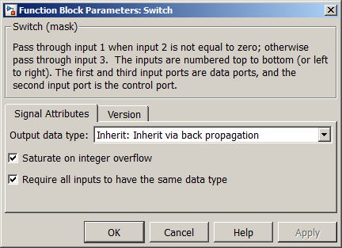

| MBDS Environment |
|
Switch |
MATLAB Helpdesk |
General
Switch output between first input and third input based on value of second input
Library
DescriptionMBDS Blockset
The Switch block passes through the first input or the third input based on the value of the second input. The first and third inputs are called data inputs. The second input is called the control input. If the control input is not equal to zero the first input is passed to the output. Otherwise the third output is passed to the output.
Via the register card Signal Attributes signal related attributes can be configured (see Figure 1).
- Output data type. The data type of the output signal can be configured here.
- Saturate on integer overfow. If checked, the output signal is saturated to the minimum or maximum of the output signal data type.
- Require all inputs to have the same data type. If checked, then all the inputs will have the same data type.

Figure 1: Parameter Mask Dialog - Register card MainThe register card Version displays the block version information.
Inputs and Outputs
Example*) Except enumeration data types.
Port I/O Data Type Description u1 In Any Data input 1 u2 In Any* Control input u3
In
Any
Date output 2 y Out Any Data output
-